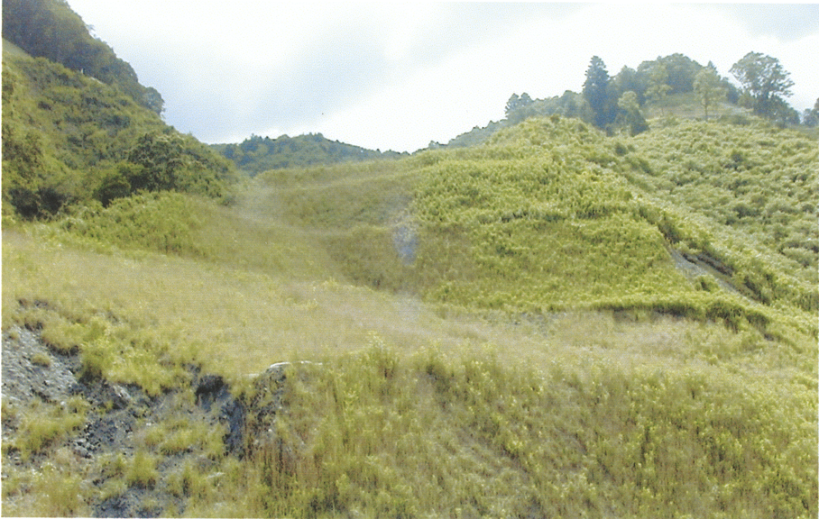
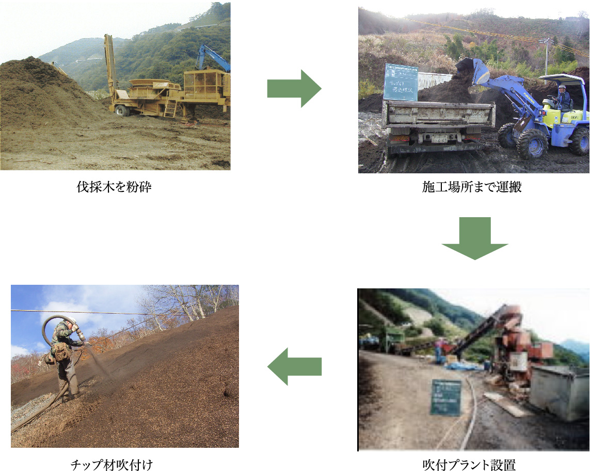
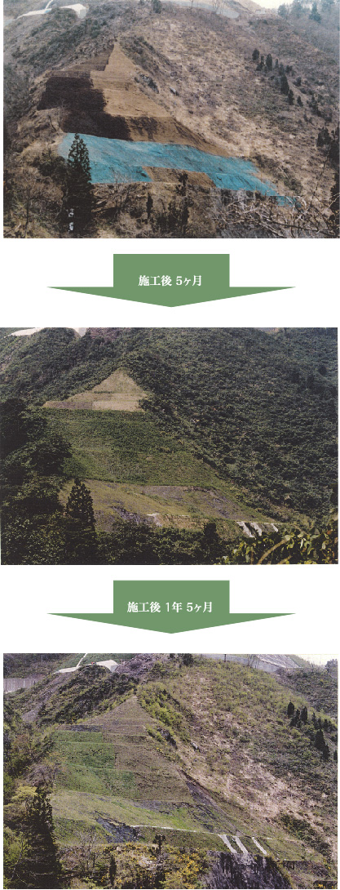

チップ材吹付工法
チップ材吹付工法とは
法面保護工の一種で、従来の厚層基材吹付工における市販の基盤材の替わりに、伐採木を粉砕してできたチップ材を用いて吹付ける工法です。
道路やダムを建設するにあたっては、多くの木が伐採されることとなります。これまでは、伐採木の必要とされない部分は、野焼きや埋立てなどにより処分されてきました。しかし、環境問題が重要視されるようになり、野焼きは禁止され、一般廃棄物として処理しなければならなくなりました。
そこで、伐採した木をゴミとしてではなく、ひとつの資源として利用できないかと考え、粉砕してチップ化することにより緑化のリサイクル資源としようと試みたのがチップ材吹付工です。
このチップ材を緑化基盤材として用いることによって、山から出た伐採材をまたもとの山へ還すことが可能であり、自然のサイクルに組込むことができるのです。

チップ材吹付工法 特長
- 伐採木をゴミではなく、リサイクル資源として活用
- チップ材の腐食により表土を肥沃化
- 草本の繁茂を抑制し、木本類の生長が良好
- 法面被覆効果により、保温性・保湿性がUP→霜柱発生防止
チップ材吹付工法 工程

チップ材吹付工法 施工例
